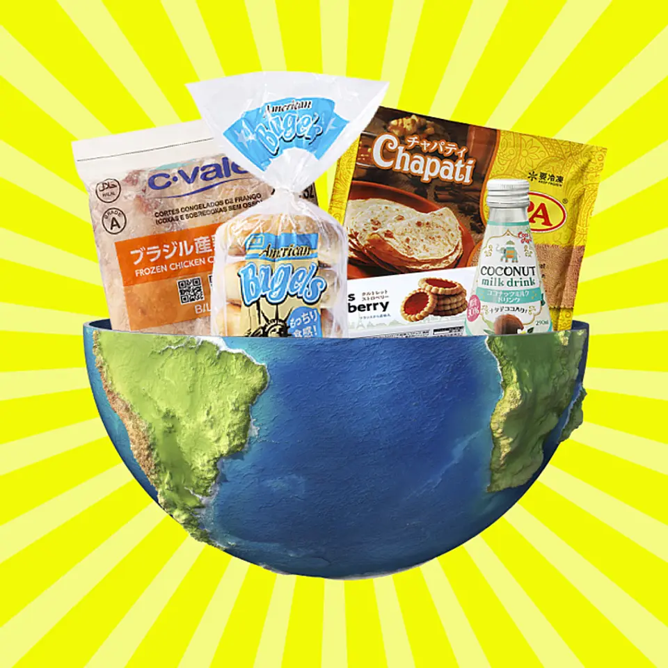
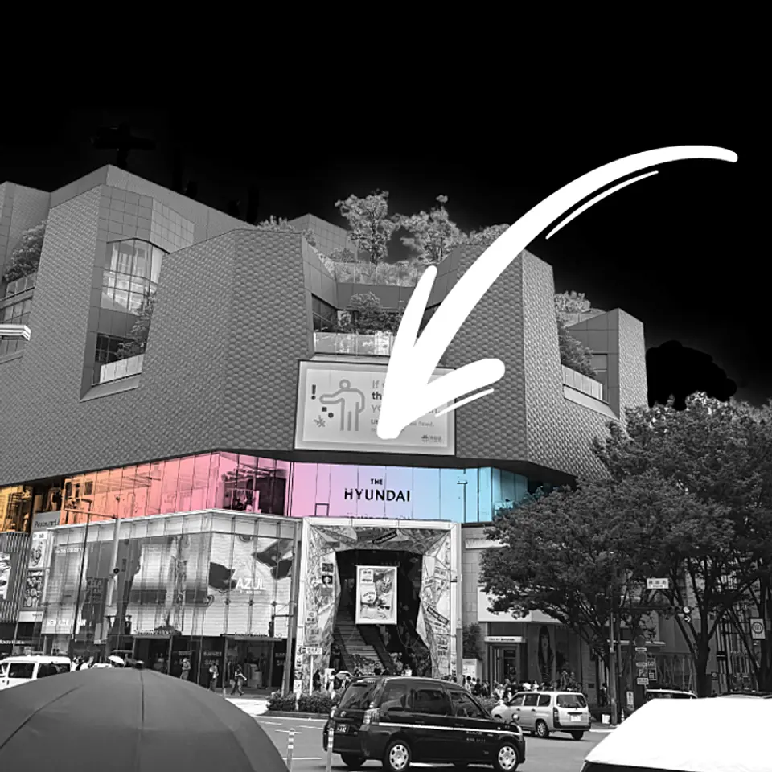
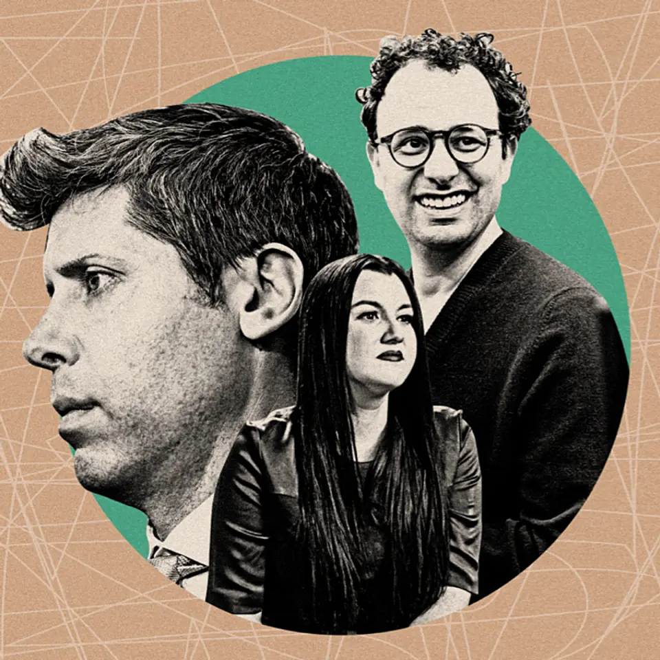

記事別メモ
1. 【業務スーパー】超円安と戦う、最強の海外バイヤーたち
発行日時: 2026/08/06（時刻は原文表示なし）
あなたに関係ありそうな理由: 値下げ交渉より先に、調達・品質・物流・販売を一本の流れとして設計し直す視点が、事業や不動産の原価管理にもつながるから。
全国1139店舗を展開する業務スーパーは、安さだけでなく、現地でしか味わえない食品をそろえる多国籍スーパーへ顔を変えようとしている。変化を担うのは約30人の海外バイヤーで、中国担当約15人を除く約10人は国も商品カテゴリーも固定されず、世界50以上の国と地域を回る。冷凍ベーグルのように当初は価格が高くても、本場の味を求める客に支持され、定番化した商品もある。企画が店頭に並ぶ割合は約4割。日本で使える添加物や衛生基準、異物混入を品質保証部が厳しく点検し、イタリア産トマト缶ではヘタを除くため工場にX線検査まで導入してもらった。重要なのは、バイヤーが買い付けだけでなく、品質管理、貿易、物流、パッケージまで一気通貫で関わり、通関やデザインも社内に持つ組織設計だ。コメントでは、円安を吸収する強さを単なる交渉力や担当者の情熱に還元せず、受け渡しの回数を減らした結果として読む指摘が目立った。外部委託や多層の取引では、引き継ぎのたびに手数料が乗り、現場情報が薄まる。値下げを仕入先へ迫っても業界全体の原価は減らないが、重複する確認や中間工程を整理すれば、品質を守りながらコストを下げられる。さらに同社が商品開発以上に重視し始めたのが、日本の食料確保だ。円安、戦争、物流遮断、収穫量の低下が重なるなか、調達は「いくらで買うか」から「必要な時に届くか」へ変わる。担当者の自由と情熱は、品質基準、専門部署、購買力という土台があってこそ成果になる。自社でも調達から提供までを一本の線で描き、どこで情報と費用が失われるかを見直したい。点検する時は、各工程の担当者名より、判断に必要な情報が何回入力され、承認待ちが何日あり、例外が誰の手元で止まるかを見るとよい。内製化が常に正解という意味でもない。外部の専門性を使う部分と、顧客価値や供給責任に直結するため自社で握る部分を分けることが肝心だ。バイヤーへ広い裁量を渡しながら、品質保証部が独立した基準で止められる仕組みも重要である。自由と統制を対立させず、挑戦を速くしつつ事故を防ぐ役割分担として組み合わせている。購買量が増えた時ほど、一人の経験に頼らず、交渉経緯や検査条件を次の案件へ残すことが供給力になる。

仕事や会話で使える一言: 原価を下げるなら値切る前に、受け渡しと二度手間がどこにあるかを見直したいですね。
NewsPicks原文を読む
2. 【次世代】今年、豆を使わない「コーヒー風飲料」が遂に登場
発行日時: 2026/08/06（時刻は原文表示なし）
あなたに関係ありそうな理由: 原料不足に対して、値上げだけでなく商品定義や飲用体験そのものを組み替える発想を学べるから。
コーヒー豆を使わない「コーヒー風飲料」が日本でも本格的に登場する。日本コカ・コーラは9月、ジョージアから「カフェ ウォーター」を発売し、アサヒ飲料も2027年にカフェラテ風とブラックコーヒー風の商品を投入する予定だ。試飲では、カフェ ウォーターは苦味が少なく、香りを残しつつ水分補給のように飲める。アサヒの試作品は、何も知らなければ本物のカフェラテと思うほど風味が近いという。背景には、干ばつや高温、病害、生産国の構造問題による豆価格の上昇がある。記事ではアラビカ種の国際価格が長期で大きく上がり、従来のコスト吸収や値上げだけでは対応しにくくなった状況を描く。豆なし飲料は原料調達を分散し、価格と供給を安定させる可能性がある一方、代替原料も別の農作物に依存する以上、新たな天候・物流リスクを抱える。コメント欄では、味の再現度より「コーヒーとは何か」という定義が揺れる点に関心が集まった。朝に豆を挽く所作、香り、店で過ごす時間まで含めた文化は簡単に代替されないが、缶やペットボトルで求められる覚醒、香り、休憩の役割は別素材へ移せるかもしれない。カニカマや植物肉のように、代替品が本物の劣化版ではなく、違う用途と顧客を持つ市場になる可能性もある。事業の教訓は、原材料が高騰した時に、価格を上げるか量を減らすかだけで考えないことだ。顧客が本当に買っている価値を、味、機能、習慣、儀式、場所に分ければ、守る部分と作り直せる部分が見えてくる。ただし「コーヒー」と誤認させない表示、原料の安全性、生産者への影響も同時に説明する必要がある。代替は供給不安への逃げ道ではなく、商品カテゴリーを再設計する仕事になる。発売後に見るべき指標も売上だけではない。従来の缶コーヒー利用者が置き換えたのか、水や清涼飲料から新しい需要を取ったのかで市場の意味は変わる。価格差、再購入率、飲む時間帯、苦味を避けていた人の反応を分けて追えば、代替品がコスト対策か新カテゴリーかを判断できる。豆の使用量を減らす商品が広がれば、生産者への需要や利益配分にも影響する。環境負荷を下げる説明だけでなく、既存産地とどう共存するかまで示せるブランドが信頼を得るだろう。技術で味を近づけるほど、消費者には何を使い、何が違うかを率直に伝える姿勢が求められる。
仕事や会話で使える一言: 原料が足りない時は、本物を薄めるより、顧客が買っている役割を分解すると新市場が見えます。
NewsPicks原文を読む
3. 【新常識】若者を呼び戻す、韓国発「百貨店」のつくり方
発行日時: 2026/08/06（時刻は原文表示なし）
あなたに関係ありそうな理由: 不動産や商業施設の価値を、面積貸しではなく発見・編集・検証の仕組みとして捉え直せるから。
韓国の現代百貨店が手がける「THE HYUNDAI」が2026年7月、原宿のオモカド3階に約200坪の売り場を開いた。韓国のファッションやライフスタイルブランドを並べ、開業直後の集客は想定の2倍を超えたという。ただし目的は韓国ブランドの輸出だけではない。日本の顧客とインバウンド客の反応を同時に観察し、商品や売り方を再解釈して世界へ広げる実験拠点として日本を選んだ。記事で印象的なのは、百貨店を完成した有名ブランドの集合ではなく、まだ知られていないブランドを見つけ、育て、話題を生む編集装置として設計している点だ。韓国では経営トップが知らないブランドだけで売り場を埋めるよう求めた例もあり、仕入れ担当者は知名度より伸びしろと世界観を見る。オンラインで何でも買える時代に、リアル店舗へ来る理由は在庫の多さではなく、偶然の発見、空間の変化、友人と共有したくなる体験に移った。コメントでも、日本の百貨店が安心感や既存顧客への最適化を重ねる一方、若者にとっては「自分向けの新しい何かが起きる場所」に見えにくくなったという論点が出た。THE HYUNDAIは短期のポップアップを繰り返し、反応の良いブランドを残しながら売り場を更新する。これはテナントを長期間固定する従来型施設とは異なり、店舗を常設の市場調査と発信媒体にする方法だ。不動産の観点では、賃料と稼働率だけでなく、来訪理由が何度更新されるか、地域へどんな回遊を生むかが価値になる。企業が応用するなら、完成品を並べて評価を待つのでなく、小さく試し、顧客の反応を次の編集に戻す場をつくることだ。海外ブランドをそのまま運ぶのではなく、日本で意味を翻訳し直す力こそ、再輸出できる競争力になる。運営側には、短期入れ替えを支える契約、什器、在庫、決済、スタッフ教育の柔軟性が必要だ。話題だけを追えば、売り場は落ち着かず、ブランドの学びも蓄積しない。来店者数に加えて、滞在時間、再訪、周辺店舗への回遊、SNSで何が共有されたかを記録し、次の編集へ戻す仕組みが欠かせない。既存顧客が安心して使う定番の場所と、新しい客が試しに来る実験の場所を、施設内でどう両立させるかも課題になる。すべてを若者向けに変えるのではなく、更新頻度の異なる区画を組み合わせれば、安定収益と発見性を同時に持てる。百貨店の再生は内装の刷新ではなく、発見を継続的に生産する運営能力の再構築だ。

仕事や会話で使える一言: 店舗の価値は商品を置く面積より、次に何を発見できるかを更新し続ける力ですね。
NewsPicks原文を読む
4. 【衝撃】世界が崇めた、7兆円のAIファンドが崩壊した
発行日時: 2026/08/06（時刻は原文表示なし）
あなたに関係ありそうな理由: 正しい構造認識でも、投資の回収期間と市場の変動周期がずれると破綻することを、建設や設備投資にも重ねて読めるから。
元OpenAI研究者レオポルド・アッシェンブレナー氏が率いるAI特化ファンドは、2024年秋の約1億ドルから、2026年のピークには約450億ドル、約7.1兆円まで運用資産を増やした。本人が発表した165ページの論考は、AI進化の制約が計算資源、電力、半導体、データセンターといった物理インフラに移り、2027年にAGIが到来するという未来像を描いた。ファンドはその物語に沿い、メモリ半導体や電力、GPU関連株を買い、AIに代替されると見たソフトウエア株を空売りした。当初は大成功し、年初来の利回りが400％を超えた時期もあったが、7月にメモリ株が急落し、空売りしていたソフトウエア株が反発。最大4倍のレバレッジが逆回転を増幅し、公開株の大部分をシタデルへ値引き売却し、全資産の67％を失ったとされる。コメントで最も実務的だったのは、崩壊の原因を「AIの読み違い」だけでなく、時間軸の取り違えとして捉える指摘だ。電力網、変電設備、冷却、用地、地域合意は年単位で進み、資金を4倍にしても工期は4分の1にならない。ところが株価と信用取引は日や週で動き、正しい長期仮説でも短期の資金繰りに耐えられなければ退場する。建設、不動産、事業投資でも、需要予測が正しくても、着工の遅れ、金利、入金時期、人員確保がずれれば同じことが起きる。もう一つの論点は、中国の高性能で安価なオープンモデルがAIをコモディティ化し、高価なモデル利用料で巨額インフラを回収する前提を揺らしていることだ。未来の大きさではなく、誰がいつ、何に対価を払い、投資回収まで持ちこたえられるかを問う必要がある。物語は資本を集めるが、時間軸と資金繰りが物語を現実にできるかを決める。事業計画へ置き換えるなら、基本シナリオだけでなく、売上が半年遅れ、金利が上がり、担保価値が下がる場合を同時に試す必要がある。損失額だけでなく、どの条件で追加資金や売却を迫られるかを先に把握しておく。成長資産を長期保有したいなら、短期の価格変動で強制的に手放さない資金構成が要る。投資先の価値と、自分がその価値の実現まで保有できることは別の問題だ。また、バブルが崩れても建設済みの電力やデータセンターは社会に残り、所有者が移る。崩壊後に誰が安値で資産を取得し、どの用途へ転換するかまで見ると、次の産業構造が見えやすい。
仕事や会話で使える一言: 長期の読みが正しくても、回収期間と相場の時間軸がずれれば資金は先に尽きます。
NewsPicks原文を読む
5. オープンAIはいかに王座を失ったか、奪還へ攻勢
発行日時: 2026/08/06（時刻は原文表示なし）
あなたに関係ありそうな理由: AI導入で大切なのが勝ち馬選びではなく、どのモデルでも成果を出せる業務設計と伴走体制だと分かるから。
WSJの記事は、生成AIブームの先頭に立ったOpenAIが、法人向けコーディング市場でAnthropicに主導権を奪われた過程を描く。OpenAIはChatGPTの巨大な利用者基盤を伸ばし、動画生成や消費者向け製品にも計算資源と人材を振り向けた。一方、AnthropicはAPIと企業利用に軸足を置き、Claude Codeを開発者の日常業務へ深く入り込ませた。OpenAIもコーディング製品Codexを社内提供したが、当初の利用は期待を下回り、速度や使い勝手への不満から開発者がClaude Codeへ流れた。競合に追いつくため仕様を見直し、専任チームを置いたものの、人材引き抜き、Microsoftとの関係修復、ほかの大型プロジェクトが経営の注意を分散させた。記事は、Anthropicの売上成長率と企業価値がOpenAIを上回り、法人契約で優位に立ったとする一方、OpenAIもCodexをChatGPTやブラウザーへ統合し、新モデルで巻き返していると伝える。コメント欄では、勝敗の見出し以上に、B2Cで認知を広げる戦略と、FDEのように顧客企業へ入り込んで導入後まで伴走するB2B戦略の違いが論点になった。技術性能が高いだけでは、企業の権限管理、既存データ、レビュー手順、費用対効果へ接続できない。反対に、現場の具体的な仕事を理解し、導入後に成果が出るまで支援できれば、モデルの差が縮まっても契約は残りやすい。利用者側への重要な示唆は、OpenAIかAnthropicかを永久に当てることではない。自社のどの工程をAIに任せ、どこを人が確認し、出力と原データをどう保持するかを先に決めることだ。特定モデル固有の機能へ業務全体を縛らず、評価基準、権限、データ形式を分離しておけば、性能や価格の変化に応じて切り替えられる。AI競争を観戦するより、どちらが勝っても困らない使い方を作るほうが、企業には持続的な優位になる。導入評価では、回答の印象より、完了時間、修正回数、誤りの種類、機密情報の扱いを同じ条件で比べたい。モデル名ではなく業務単位で基準を持てば、新製品が出るたびに判断が揺れない。現場が乗り換えられる余地を残すこと自体が、ベンダーとの価格交渉力にもなる。

仕事や会話で使える一言: AIの勝ち馬を当てるより、モデルが変わっても回る業務設計を先につくるほうが強いですね。
NewsPicks原文を読む